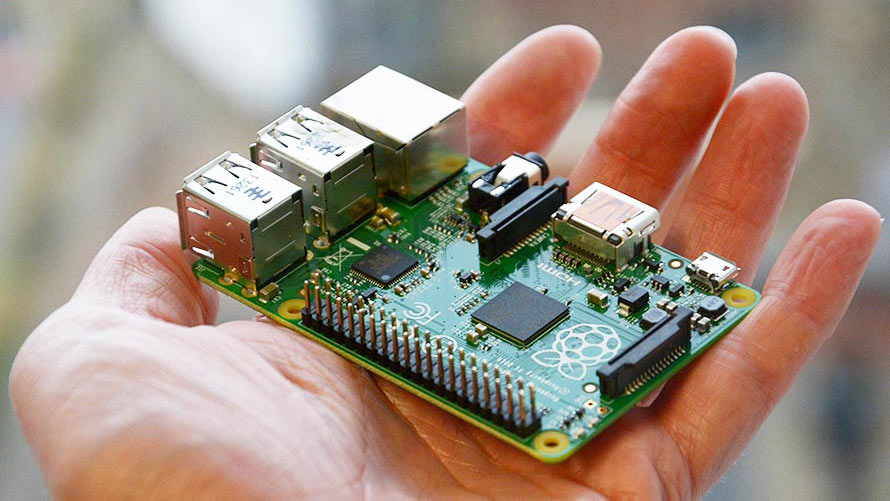

Recomendamos utilizar un navegador que soporte características HTML5/CSS3 que necesita esta presentación.
Por ejemplo, la última versión de Chrome, Safari o Firefox.


Constrúe a túa propia consola
Sobre min
Christian López Rodríguez
Enxeñeiro Informático
Twitter: @christianlrcalo
Email: clopezrodriguez95@gmail.com
¿Qué vamos a facer?
- ¿Qué é, e para que serve unha Raspberry?
- Modelos, precios e onde compralos
- Accesorios, packs
- Instalación/Posta en funcionamento
- Retropie, ¿qué é?
- Instalación de xogos
- Preguntas
¿Qué é, e para que serve unha Raspberry?
Mini PC
Boas prestacións
Multitude de compoñentes
Precio económico

Raspberry Pi Zero W
Modelo máis antigo
CPU 1 core 1GHz
512MB RAM
HDMI e microUSB
Raspberry Pi 2 Modelo B
+ Potencia e conectividade
CPU quad-core 0.9GHz
1GB RAM
4 USBs, ethernet, conectores para pantalla, cámara

Raspberry Pi 3 Modelo B
Modelo máis recente
CPU quad-core 1.2GHz
1GB RAM
Wifi, Bluetooth 4.1

Pasos da instalación
- 1- Descargar un Sistema Operativo. Noobs, Ubuntu, Raspbian ...
- 2- Ter unha tarxeta SD.
- 3- Copiar o Sistema Operativo na tarxeta SD.
- 4- Insertar a tarxeta na Raspberry.
- 5- Instalar e configurar Retropie.
1- Descargar Sistema Operativo
Dende a páxina de Raspberry temos varias opcións
Incluso dende Retropie temos unha versión preparada
Ubuntu, Raspbian (debian), Windows
Versións "empaquetadas" (con osmc)

2) Tarxeta Micro SD
Clase 10 (maior velocidadde)
ASEGURARSE DE QUE ESTÁ VACÍA
3) Copiar o Sistema Operativo na tarxeta SD
Varias opcións: unzip e dd (descartadas)
Ferramenta multiplataforma Etcher

5) Instalar e configurar Retropie
Qué é retropie?
Emulador de consolas antigas
Atari, Sega, Nintendo DS, NES, ...
Multitude de ROMS dispoñibles
Fácil instalación e configuración

Instalación dende terminal
O proceso é sinxelo e corto
Execución de comándos básicos (cd, git)
Git para descargar o emulador
Instalación dende unha imaxe
Dende Retropie descargamos a imaxe preparada
Descomprimimos con unzip
Insertamos na sd mediante dd ou Etcher
Instalar xogos no emulador
- Moi facil. Descargar, copiar e pegar.
- Previo paso de xeración da estructura de arquivos.
- Multitude de sitios para descargar ROMS.
- O máis complicado é escoller ao que queres xogar!
Gracias a todos!
- Preguntas, dudas
- Consellos, contribucións, o que queirades!